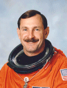

Lyndon B. Johnson Space Center
Houston, Texas 77058
|
National Aeronautics and Space Administration Lyndon B. Johnson Space Center Houston, Texas 77058 |
 |
Biographical Data |
||
Curtis L. Brown, Jr. (Colonel, USAF, Ret.)
NASA Astronaut (former)
PERSONAL DATA: Born March 11, 1956, in Elizabethtown, North Carolina. He is married and has one son. He enjoys water and snow skiing, scuba diving, air racing, restoring old cars, sailing, aerobatic flying. His mother, Mrs. Rachel H. Brown, resides in Elizabethtown, North Carolina. His father, Mr. Curtis L. Brown, Sr., is deceased.
EDUCATION: Graduated from East Bladen High School, Elizabethtown, North Carolina, in 1974; received a bachelor of science degree in electrical engineering from the Air Force Academy in 1978.
ORGANIZATIONS: Member, United States Air Force Association, United States Air Force Academy Association of Graduates, Experimental Aircraft Association and Classic Jet Aircraft Association.
SPECIAL HONORS: Defense Superior Service Medal, Defense Meritorious Service Medal (2), Air Force Meritorious Service Medal, Air Force Commendation Medal, Air Force Achievement Medal, NASA Space Flight Medal (6).
EXPERIENCE: Brown was commissioned a second lieutenant at the United States Air Force Academy, Colorado Springs, in 1978, and completed undergraduate pilot training at Laughlin Air Force Base, Del Rio, Texas. He graduated in July 1979 and was assigned to fly A-10 aircraft at Myrtle Beach Air Force Base, South Carolina, arriving there in January 1980 after completing A-10 training at Davis-Monthan Air Force Base, Arizona. In March 1982, he was reassigned to Davis-Monthan Air Force Base as an instructor pilot in the A-10. In January 1983, he attended USAF Fighter Weapons School at Nellis Air Force Base and returned to Davis-Monthan Air Force Base as an instructor in A-10 weapons and tactics. In June 1985, he attended USAF Test Pilot School at Edwards Air Force Base, California. Upon graduation in June 1986, Brown was assigned to Eglin Air Force Base, Florida, where he served as a test pilot in the A-10 and F-16 aircraft until his selection for the astronaut program. He has logged over 6,000 hours flight time in jet aircraft.
NASA EXPERIENCE: Selected as an astronaut candidate by NASA in June 1987, Brown completed a one-year training and evaluation program in August 1988, and is qualified for flight assignment as a pilot. Technical assignments have included: involvement in the upgrade of the Shuttle Mission Simulator (SMS); development of the Flight Data File (FDF); lead of the astronaut launch support team responsible for crew ingress/strap-in prior to launch and crew egress after landing; monitored the refurbishment of OV-102 and OV-103 during ground turnaround processing; lead spacecraft communicator (CAPCOM); Astronaut Office Lead of Shuttle Operations; Deputy Director, Flight Crew Operations Directorate. A veteran of six space flights, Brown has logged over 1,383 hours in space. He was the pilot on STS-47 in 1992, STS-66 in 1994 and STS-77 in 1996, and was spacecraft commander on STS-85 in 1997, STS-95 in 1998, and STS-103 in 1999. Brown retired from NASA to accept a position in the private sector.
SPACE FLIGHT EXPERIENCE: STS-47 Spacelab-J (September 12-20, 1992) was an eight-day cooperative mission between the United States and Japan focused on life science and materials processing experiments in space. After completing 126 orbits of the Earth, the mission ended with Space Shuttle Endeavour landing at Kennedy Space Center, Florida. Mission duration was 190 hours, 30 minutes, 23 seconds.
STS-66 (November 3-14, 1994) was the Atmospheric Laboratory for Applications and Science-3 (ATLAS-3) mission. ATLAS-3 was part of an ongoing program to determine the Earth's energy balance and atmospheric change over an 11-year solar cycle. Following 175 orbits of the Earth, the 11-day mission ended with the Shuttle Atlantis landing at Edwards Air Force Base, California. Mission duration was 262 hours and 34 minutes.
STS-77 (May 19-29, 1996) was a ten-day mission aboard Space Shuttle Endeavour. The crew performed a record number of rendezvous sequences (one with a SPARTAN satellite and three with a deployed Satellite Test Unit) and approximately 21 hours of formation flying in close proximity of the satellites. During the flight the crew also conducted 12 materials processing, fluid physics and biotechnology experiments in a Spacehab Module. STS-77 deployed and retrieved a SPARTAN satellite, which carried the Inflatable Antenna Experiment designed to test the concept of large, inflatable space structures. A small Satellite Test Unit was also deployed to test the concept of self-stabilization by using aerodynamic forces and magnetic damping. The mission was concluded in 160 Earth orbits, traveling 4.1 million miles in 240 hours and 39 minutes.
STS-85 (August 7-19, 1997) was a 12-day mission during which the crew deployed and retrieved the CRISTA-SPAS payload, operated the Japanese Manipulator Flight Demonstration (MFD) robotic arm, studied changes in the Earth’s atmosphere and tested technology destined for use on the future International Space Station. The mission was accomplished in 189 Earth orbits, traveling 4.7 million miles in 284 hours and 27 minutes.
STS-95 (October 29 to November 7, 1998) was a 9-day mission during which the crew supported a variety of research payloads including deployment of the Spartan solar-observing spacecraft, the Hubble Space Telescope Orbital Systems Test Platform, and investigations on space flight and the aging process. The mission was accomplished in 134 Earth orbits, traveling 3.6 million miles in 213 hours and 44 minutes.
STS-103 (December 19-27, 1999) was an 8-day mission during which the crew successfully installed new instruments and upgraded systems on the Hubble Space Telescope (HST). Enhancing HST scientific capabilities required three space walks. The STS-103 mission was accomplished in 120 Earth orbits, traveling 3.2 million miles in 191 hours and 11 minutes.
JULY 2007
This is the only version available from NASA. Updates must be sought from the above named individual.